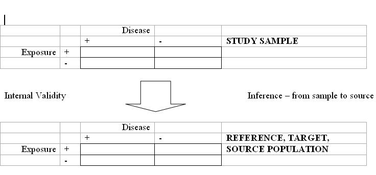
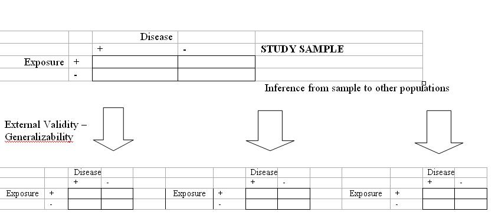

Inference
Lead Author(s): Jeff Martin, MD
The goal of any study is make an accurate (true) inference or to find the truth about the source. There are two types of inferences and inferences vary according to the type of study.
Types of Inferences
From the sample to the source population

From the sample of the external population

Inferences by Study Type
Inference in descriptive studies
In a descriptive study this would be the measure of disease occurrence or exposure occurrence.
Inferences in analytic studies
In an analytic study this would be the measure of association between the exposure and disease.